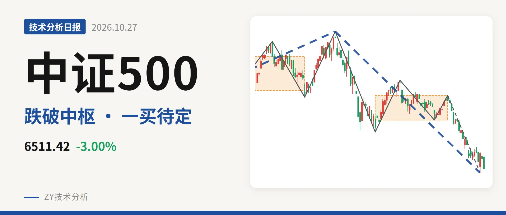
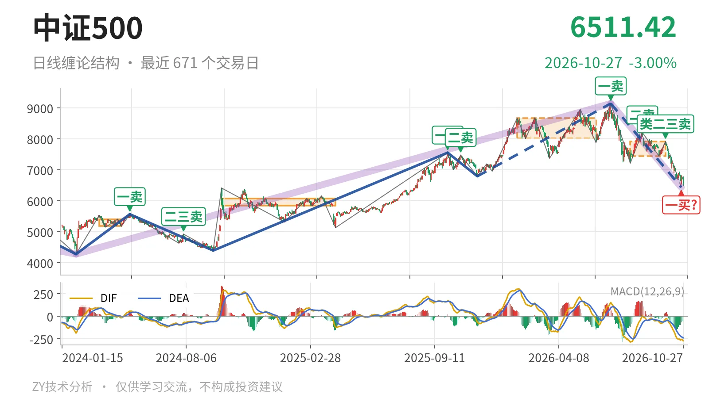
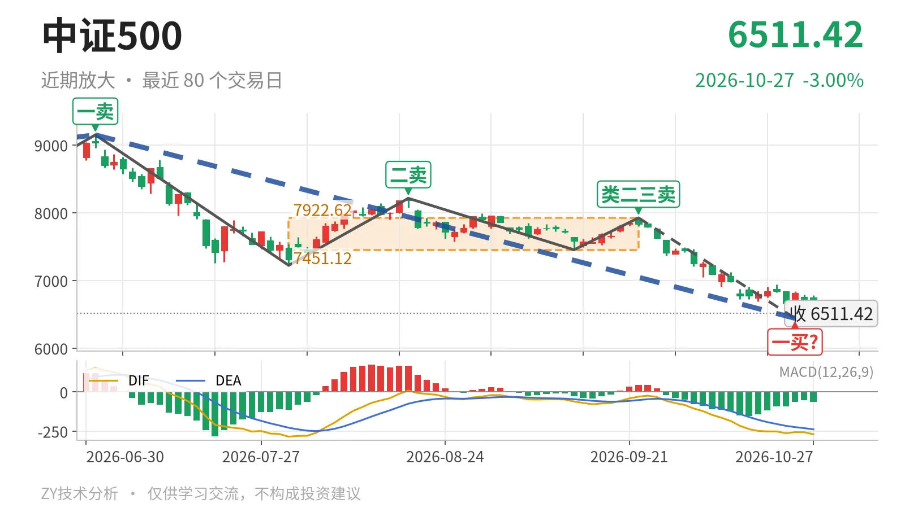

中证500｜跌穿7451下沿，6440一买待定

最近日线中枢 7451.12—7922.62点，收盘位于中枢之下
一句话：跌破最近中枢下沿，下跌段仍有潜在底背驰，6440一买待定
📉 走势结构：上涨段转入回落，日线下跌仍主动
当前处于2026年7月1日以来的日线下跌段，这段下跌没有结束。更大级别上，2024年2月5日一买4281.24点、2024年9月18日二买4397.16点、2025年11月24日三买6797.50点依次抬高，上涨结构仍在。2025年11月24日至2026年7月1日的上涨段走到9147.56点后转入回落，2026年7月1日以来的下跌段已含5笔，最新价回到三买6797.50点下方。线段级别卖点尚未出现，因此更大级别上涨还不能说已经结束。

📍 中枢位置：最新价跌破下沿，中枢中轴下移
最新收盘6511.42点低于7月30日至9月22日中枢下沿7451.12点约12.6%，处于中枢下方。该中枢区间为7451.12—7922.62点，中轴7686.87点，当前仍在延续。前一个日线笔中枢1月26日至6月8日区间为8014.66—8671.35点，中轴8343.00点。两个中枢区间不重叠，中轴从8343点下移到7687点，属于中枢下移。
🎯 买卖点：7月后卖点逐级走低，一买暂定
日线笔级别上，7月1日一卖9147.56点、8月18日二卖8211.31点、9月22日类二三卖7922.62点，一个比一个低，反弹高点逐级减弱。10月23日出现一买6440.29点，但所在9月22日至10月23日下跌笔还在延续，只能作暂定的一买。10月26日至10月27日反弹最高6787.32点，收盘6511.42点，未形成新的日线笔，也未改变该笔延续状态。

⚖️ 背驰：9月下跌笔出现新低不新弱
最关键的对比是7月1日至7月30日与9月22日至10月23日的下跌笔。前者绿柱面积2687，DIF低点-285.2；后者绿柱面积1443，DIF低点-263.4。后者价格创出6440.29点新低，绿柱面积明显缩小，DIF低点抬高，属于新低不新弱。但9月22日以来的下跌笔还在延续，这个底背驰仍只是潜在状态。当前MACD的DIF为-270.0，DEA为-238.7，柱为-62.6，DIF仍在零轴之下。
🧭 关键位置：反抽看7451点附近，结构偏弱
结构偏弱，弱在最新价低于最近中枢下沿12.6%，中枢下移，且日线卖点一个比一个低。反抽若回不到7451点附近，结构上构成三卖；重新站上7451点附近，下跌更可能只是中枢扩展。下方6440点暂定一买若被延续笔跌破，底背驰信号就要重新观察。结构判断仍偏弱。
⚠️ 本文为基于公开行情数据的缠论技术结构记录，由程序自动计算并生成，仅供学习交流，不构成任何投资建议。市场有风险，投资需谨慎。